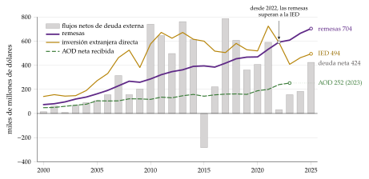
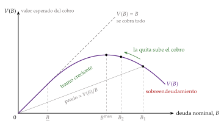
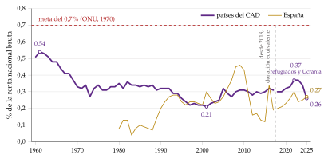

Tema 3.B.29
La financiación exterior del desarrollo económico.\cortetitulo El problema de la deuda externa. La ayuda al desarrollo.
Dos brechas, paradoja de Lucas, sostenibilidad e impago de la deuda externa, curva de Laffer de la deuda, Plan Brady, PPME y eficacia de la ayuda al desarrollo.
Exclusivo Material exclusivo de victorgutierrezmarcos.es y la app Oposición TCEE · DCE. Puedes usarlo libremente para tu estudio personal. No se autoriza su incorporación a otras plataformas, aplicaciones o servicios. Condiciones de uso.
Introducción
Enganche:
«Dale un pez a un hombre y comerá un día; enséñale a pescar y comerá toda la vida», dice el refrán.
Del 30 de junio al 3 de julio de 2025, Sevilla acogió la IV Conferencia Internacional sobre la Financiación para el Desarrollo. Su documento final, el Compromiso de Sevilla, parte de una cifra: a los países en desarrollo les faltan unos 4 billones de dólares al año para cumplir los Objetivos de Desarrollo Sostenible.
Ese mismo año, la ayuda oficial de los donantes de la OCDE cayó un 23,1 % en términos reales, la mayor caída registrada, hasta el 0,26 % de su renta nacional bruta, mientras los países de renta baja y media pagaban 1,4 billones de dólares por el servicio de su deuda externa.
La pregunta que recorre la exposición es: ¿por qué el capital que necesitan los países pobres no llega, llega caro o llega regalado y no sirve?
Relevancia:
Para los países en desarrollo: sin ahorro exterior, su inversión queda limitada por su propio ahorro, que es escaso precisamente porque son pobres; con demasiado, la deuda se come lo que crecen. Entre 2022 y 2025 pagaron 436.000 millones de dólares más por su deuda de lo que recibieron en financiación nueva.
Para la economía mundial: las crisis de la deuda de los 80 y de los países más pobres en los 90 marcaron el sistema financiero internacional, y la ola de deuda posterior a la pandemia sigue abierta [ver tema 3.B.21].
Para España y para el cuerpo: España es miembro del Club de París, accionista de los bancos multilaterales y donante del Comité de Ayuda al Desarrollo; los técnicos comerciales y economistas del Estado la representan en esos foros y gestionan los instrumentos financieros de apoyo a la internacionalización y la conversión de deuda [ver tema 4.A.24] [ver tema 4.A.26].
Contextualización:
Las definiciones de partida:
los países en desarrollo son, en las estadísticas del Banco Mundial, los de renta baja y media, clasificados por su renta nacional bruta por habitante; el desarrollo es más que crecer, pero sin crecer no hay desarrollo [ver tema 3.B.28];
la financiación exterior es el ahorro que el resto del mundo pone a disposición de un país: su contrapartida es un déficit por cuenta corriente, porque \(\mathrm{CC}=S-I\), y el país invierte más de lo que ahorra [ver tema 3.B.11];
la deuda externa bruta es el saldo de los pasivos frente a no residentes que obligan a pagar principal o intereses (préstamos, bonos, depósitos, créditos comerciales); excluye las acciones y la inversión directa en capital. Restando los activos de deuda frente al exterior se obtiene la deuda externa neta;
la ayuda oficial al desarrollo (AOD) es la parte de la financiación exterior que dan los gobiernos en condiciones de favor y con el desarrollo como fin principal (III.1).
La historia:
la ayuda nace tras la Segunda Guerra Mundial, con el Plan Marshall y la descolonización, y se institucionaliza en 1961 con el Comité de Ayuda al Desarrollo (CAD) de la OCDE;
la deuda vive 3 grandes episodios: la crisis latinoamericana de 1982, la deuda de los países más pobres, que acaba en las condonaciones de 1996-2005, y la nueva ola de deuda de los 2010, con China como gran acreedor y la pandemia como detonante;
la agenda pasa de la ayuda a la financiación del desarrollo en su conjunto, con 4 conferencias de las Naciones Unidas: Monterrey (2002), Doha (2008), Addis Abeba (2015) y Sevilla (2025).
Problemática:
¿Por qué debería el capital ir de los países ricos a los pobres, y por qué no lo hace?
¿Cuándo es sostenible la deuda externa, por qué pagan los Estados lo que deben y cómo se han resuelto las crisis de la deuda?
¿Qué es la ayuda al desarrollo, cómo ha evolucionado y funciona de verdad?
Estructura:
La exposición sigue el título, de lo general a lo particular: de todas las fuentes de financiación exterior a la que crea deuda y, por último, a la que no se devuelve.
I. La financiación exterior del desarrollo (I): por qué financiarse fuera, por qué el capital no va a los pobres y qué fuentes hay;
II. El problema de la deuda externa (II): sostenibilidad, impago y sobreendeudamiento, las crisis y sus respuestas y el marco institucional;
III. La ayuda al desarrollo (III): concepto y medida, evolución y agenda, y el debate sobre su eficacia.
3.B.29. La financiación exterior del desarrollo económico. El problema de la deuda externa. La ayuda al desarrollo
Introducción2′30″
I. La financiación exterior del desarrollo8′30″
1. ¿Por qué financiarse fuera?
2. El capital no va a los pobres
3. Las fuentes de la financiación exterior
II. El problema de la deuda externa9′
1. Sostenibilidad, impago y sobreendeudamiento
2. Las crisis de la deuda y sus respuestas
3. El marco institucional y las soluciones
III. La ayuda al desarrollo8′30″
1. Concepto y medida
2. Evolución y agenda
3. ¿Funciona la ayuda?
Conclusión1′30″
Reparto del cante: introducción, 2′30″; I, 8′30″ (I.1, 3′30″; I.2, 1′30″; I.3, 3′30″); II, 9′ (II.1, 3′30″; II.2, 3′30″; II.3, 2′); III, 8′30″ (III.1, 2′30″; III.2, 2′30″; III.3, 3′30″), y conclusión, 1′30″. Los programas del FMI y la estructura del Banco Mundial tienen su propio tema: aquí basta con nombrarlos. Los 3 gráficos imprescindibles son el del modelo intertemporal, el de la dinámica de la deuda externa y la curva de Laffer de la deuda; las funciones clave, las 2 brechas, la dinámica de la deuda externa y el saldo que la estabiliza. El refrán del enganche vuelve en la idea final. Las 3 cifras que conviene llevar al día son la AOD del CAD y su porcentaje de la renta, la deuda externa y su servicio en los países de renta baja y media y el número de países en riesgo alto de sobreendeudamiento.
I. La financiación exterior del desarrollo
Empezamos por la financiación exterior en su conjunto: por qué la necesita un país pobre, por qué le llega tan poca y en qué formas le llega.
Conclusión anticipada: la teoría dice que un país con poco capital debería recibirlo del resto del mundo y ganar con ello; los datos dicen que el capital va poco a los pobres y que importa tanto cómo llega como cuánto llega.
I.1. ¿Por qué financiarse fuera?
Hay 2 respuestas: la de la economía del desarrollo de los 50 y 60, que calcula cuánto capital falta para crecer (la brecha de financiación), y la de la macroeconomía abierta, que pregunta cuándo le conviene a un país endeudarse (el enfoque intertemporal).
I.1.1. La brecha de financiación
a) Idea
El punto de partida: un país pobre ahorra poco porque es pobre, y sigue siendo pobre porque invierte poco. Es el círculo vicioso de la pobreza de Nurkse (1953).
La salida: si el ahorro interno no alcanza para la inversión que exige crecer, la diferencia tiene que ponerla el resto del mundo, con crédito o con ayuda. Es la justificación más antigua de la financiación exterior del desarrollo y la que dio origen a la ayuda.
b) Modelo
i) Supuestos
Tecnología: la producción es proporcional al capital, con una relación capital-producto \(v\equiv K/Y\) fija y sin sustitución entre factores. Es la versión de Evsey Domar del modelo de Roy Harrod y Evsey Domar [ver tema 3.A.43].
Ahorro: la tasa de ahorro interna, \(s\), es exógena, y no hay depreciación.
Objetivo: el Gobierno fija la tasa de crecimiento que quiere alcanzar, \(\bar\gamma_Y\) (la barra marca lo fijado).
ii) Desarrollo
La inversión necesaria: como \(Y=K/v\) e \(I=\Delta K\), crecer a \(\bar\gamma_Y\) exige invertir una parte de la renta igual a la relación capital-producto por el crecimiento objetivo, y lo que no cubre el ahorro interno es la brecha de ahorro: \[\tag{1} \frac{I}{Y}=v\,\bar\gamma_Y ,\qquad \frac{I-S}{Y}=v\,\bar\gamma_Y-s .\]
Su lectura: \(v\,\bar\gamma_Y-s\) es la financiación exterior «necesaria» para alcanzar el objetivo [ver tema 3.B.28].
Con \(v=3\) y un objetivo del 6 %, hay que invertir el 18 % del PIB; si el país ahorra el 12 %, necesita financiación exterior por el 6 % del PIB cada año.
iii) Implicaciones
La financiación exterior acelera el crecimiento en proporción a la brecha que cubre: cada punto de PIB de crédito o de ayuda que se invierte añade \(1/v\) puntos de crecimiento.
Una regla de cálculo: durante décadas, el Banco Mundial y otros organismos calcularon con ella cuánta ayuda necesitaba cada país.
c) Extensiones: las 2 brechas
El segundo límite: Chenery y Strout (1966) observan que un país pobre importa casi todos sus bienes de equipo, de modo que crecer no exige solo ahorro, sino también divisas.1
La brecha de ahorro es la inversión que exige el objetivo menos el ahorro interno, \(I-S\).
La brecha de divisas son las importaciones que exige el objetivo menos lo que el país ingresa por exportaciones, \(M-X\).
La financiación exterior necesaria, \(\mathrm{FE}\), es la mayor de las 2 brechas (\(\mathrm{FE}\) va en redonda porque \(F\) es la función de producción):
\[\frac{\mathrm{FE}}{Y}=\max\left\{v\,\bar\gamma_Y-s,\ \frac{M-X}{Y}\right\}\tag{2}\]
Por qué el máximo: después de los hechos las 2 brechas son iguales, porque el ahorro menos la inversión es el saldo exterior [ver tema 3.B.11]; antes, en los planes, pueden no serlo, y la mayor es la que frena el crecimiento. La otra se cierra sola, con ahorro o con divisas que quedan sin usar.
Si manda la brecha de divisas, el ahorro interno no basta aunque exista: no se puede convertir en las máquinas que hay que comprar fuera. Cada dólar de financiación exterior rinde entonces más que si solo faltara ahorro.
d) Evidencia empírica
La regla no funcionó: la ayuda no se tradujo en inversión ni la inversión en crecimiento. Si toda la ayuda recibida por Zambia desde los 60 se hubiera invertido y la inversión se hubiera convertido en crecimiento como dice la regla, su renta por habitante habría superado los 20.000 dólares en 1994; era de unos 600.
El propio Evsey Domar había renegado de ese uso de su modelo, que había pensado para el ciclo y no para el crecimiento a largo plazo.
e) Valoración
Sus supuestos: con rendimientos decrecientes y sustitución entre factores, acumular capital no sostiene por sí solo el crecimiento [ver tema 3.A.43]; y la ayuda es fungible: puede sustituir al ahorro interno en lugar de sumarse a él (III.3).
Lo que no dice: calcula cuánto falta, pero no si al país le conviene endeudarse ni cuánto. Para eso hace falta un modelo con optimización: el enfoque intertemporal.
I.1.2. El enfoque intertemporal
a) Idea
La pregunta: ¿por qué le conviene a un país pobre endeudarse con el exterior?
La respuesta: un déficit exterior no es malo en sí; es la forma en que un país pide prestado hoy para invertir o consumir y devuelve mañana. El enfoque intertemporal de la cuenta corriente lo formaliza y permite juzgar los déficits por su efecto sobre el bienestar [ver tema 3.B.12].
b) Modelo
i) Supuestos
Economía: pequeña y abierta, con 2 periodos (\(t\) y \(t+1\)), un solo bien que se consume o se invierte y previsión perfecta.
Preferencias: un agente representativo con utilidad \(U=u(C_t)+\beta\,u(C_{t+1})\), \(\beta\equiv1/(1+\rho)\) [ver tema 3.A.29].
Tecnología: la producción depende del capital, \(F(K)\), con rendimientos decrecientes y sin depreciación (\(K_{t+1}=K_t+I_t\)).
Mercados: acceso perfecto al mercado internacional de capitales al tipo real \(r^*\), dado; todo déficit se financia con deuda.
ii) Desarrollo
En autarquía, el país solo puede pasar recursos al futuro invirtiendo. El equilibrio está donde la curva de indiferencia es tangente a la frontera de posibilidades de producción intertemporal (punto \(A\) del gráfico 1), y su pendiente común define el tipo de interés de autarquía, \(-(1+r^A)\).
Un país pobre tiene poco capital, que rinde mucho en el margen: su tipo de autarquía es mayor que el mundial, \(r^*<r^A\).
Con apertura, la decisión se separa en 2, como en el teorema de separación de Irving Fisher [ver tema 3.A.29]:
primero se invierte hasta que el capital rinde lo que cuesta pedir prestado fuera, sin mirar las preferencias: \[\tag{3} F'(K_{t+1})=r^* ;\]
después se reparte el consumo entre los 2 periodos, pidiendo prestado o prestando al tipo mundial.
La cuenta corriente es el ahorro menos la inversión, y el superávit comercial de \(t+1\) devuelve lo pedido en \(t\) con sus intereses: \[\tag{4} \mathrm{CC}_t=S_t-I_t ,\qquad \mathrm{XN}_{t+1}=-(1+r^*)\,\mathrm{CC}_t .\]
Interpretación gráfica (gráfico 1), con \(r^*<r^A\):
el país produce en \(P\), donde la frontera tiene la pendiente del mercado, \(-(1+r^*)\): invierte más que en autarquía, porque el capital rinde dentro más de lo que cuesta fuera (\(P\) es un punto, no el nivel de precios);
consume en \(C\), en una curva de indiferencia más alta que la de \(A\);
en \(t\) tiene un déficit por cuenta corriente, la distancia horizontal entre \(C\) y \(P\), que se reparte entre más inversión (\(\Delta I\)) y más consumo (\(\Delta C\)) que en autarquía y se financia con una entrada neta de capital;
en \(t+1\) tiene un superávit comercial, la distancia vertical entre \(P\) y \(C\), con el que devuelve la deuda y sus intereses.

Fuente: Elaboración propia a partir de Obstfeld y Rogoff (1996, cap. 1). \(A\) es la autarquía; con \(r^*<r^A\), el país produce en \(P\), consume en \(C\) y tiene un déficit en \(t\) que se reparte entre más inversión (\(\Delta I\)) y más consumo (\(\Delta C\)).
iii) Implicaciones
La dirección del capital: el capital debería ir de los países ricos a los pobres, y los 2 ganarían. El pobre invierte más y reparte mejor su consumo en el tiempo; el rico presta a un tipo mayor que el que obtendría en casa.
El bienestar: la apertura nunca lo reduce, y corregir un déficit óptimo lo empeora.
El uso de la deuda: un déficit que financia inversión rentable se paga solo; uno que financia consumo frente a una caída permanente de la renta solo retrasa el ajuste. Lo temporal se financia; lo permanente se ajusta.
c) Valoración
Sus supuestos: acceso perfecto al crédito y ningún riesgo de impago, justo lo que menos se cumple en los países pobres; por qué pagan los Estados lo que deben es una pregunta del segundo bloque (II.1).
Sus predicciones: grandes flujos de capital de los países ricos a los pobres, que los datos no muestran. Es la paradoja de Lucas.2
I.2. El capital no va a los pobres
Una vez vista la teoría, pasamos a los hechos, que van en la dirección contraria.
La paradoja de Lucas: el capital no va de los países ricos a los pobres.
Con la misma tecnología, una renta por persona 15 veces menor en la India que en Estados Unidos y una participación del capital de 0,4, el rendimiento del capital en la India debería ser 58 veces mayor.
Con el capital humano la diferencia baja a 5, y con sus externalidades prácticamente desaparece.
El capital va a donde ya hay capital, como en el evangelio: «al que tiene, se le dará» (Mateo 25, 29).
Las explicaciones son de 2 familias:
los fundamentales: el capital rinde en los países pobres menos de lo que parece, porque tienen menos productividad total de los factores, menos capital humano, peores infraestructuras e instituciones más débiles, que según Daron Acemoglu, Simon Johnson y James Robinson explican buena parte de las diferencias de renta entre países [ver tema 3.B.28]3;
los fallos del mercado internacional de capitales:
el riesgo de expropiación y de impago, porque no hay un tribunal que obligue a pagar a un Estado (II.1);
la información asimétrica entre el deudor y el acreedor, que encarece el crédito al país pobre;
la escasez de activos financieros seguros en los países pobres, que concentra el ahorro mundial en los pocos países que los emiten.
La intolerancia a la deuda: los países con un historial de impagos entran en crisis con deudas mucho menores que los demás, de modo que no hay un umbral de deuda que valga para todos.
El puzle de la asignación: entre los países en desarrollo, los que más crecen en productividad reciben menos capital neto, e incluso lo exportan, al revés de lo que predice el modelo; detrás están la acumulación de reservas y el ahorro público, no la inversión privada [ver tema 3.B.12].
Más capital exterior no es más crecimiento: entre los países no industrializados, los que más se apoyaron en el ahorro exterior no crecieron más que los que se financiaron con el suyo, y la cuenta corriente y el crecimiento van juntos en sentido positivo.
El capital exterior complementa al ahorro interno, pero no lo sustituye: importa la forma en que llega, que es lo que vemos a continuación.
I.3. Las fuentes de la financiación exterior
Ya sabemos que la financiación exterior puede ser útil pero no llega sola; pasamos a sus formas.
La pregunta que las ordena es quién asume el riesgo: si el país se compromete a pagar pase lo que pase (deuda) o si lo que paga depende de cómo le vaya (inversión directa, acciones).
Los órdenes de magnitud: en 2025, los países de renta baja y media recibieron unos 700.000 millones de dólares en remesas, más que en inversión directa (unos 494.000 millones), y una entrada neta de deuda de 423.500 millones, más del doble que un año antes; la ayuda oficial que recibieron en 2023, último año con dato, fue de unos 252.000 millones (gráfico 2).

Fuente: Elaboración propia a partir de Banco Mundial (2026b) y Banco Mundial (2026a). Miles de millones de dólares corrientes. Inversión directa: entradas netas; remesas: recibidas por los hogares; AOD: ayuda neta recibida de todos los donantes y organismos (último dato, 2023); deuda: desembolsos menos amortizaciones de toda la deuda externa.
I.3.1. Las que no crean deuda
La inversión extranjera directa (IED) da al inversor una influencia duradera en la empresa, con un 10 % o más de su capital [ver tema 3.B.11].
Ventajas: es la más estable, trae tecnología, gestión y acceso a mercados, y sus rentas caen en las malas épocas, de modo que el inversor comparte el riesgo.
Por qué invierten fuera las empresas: por sus ventajas de propiedad, de localización y de internalización, el paradigma ecléctico de Dunning (1980); y solo las más productivas pueden pagar el coste fijo de producir fuera en lugar de exportar [ver tema 3.B.18].
Lo que controla el país es la localización: estabilidad, infraestructuras, capital humano y reglas.
Inconvenientes: se concentra en pocos países de renta media y, en los más pobres, en los recursos naturales; y repatría sus beneficios.
La inversión de cartera en acciones:
Ventajas: no crea deuda y sus rentas caen en las crisis.
Inconvenientes: es volátil, con efecto rebaño, y exige mercados financieros profundos que los países pobres no tienen; en 2024 salió en términos netos de los países de renta baja y media.
Las remesas de los emigrantes, hoy la mayor entrada de recursos de los países de renta baja y media:
Ventajas: son estables, a menudo anticíclicas (el emigrante envía más cuando su familia lo pasa mal) y llegan directamente a los hogares.
Inconvenientes: se dedican sobre todo al consumo, su efecto sobre el crecimiento es difícil de encontrar en los datos, pueden apreciar el tipo de cambio real y tienen detrás la salida de trabajadores, a menudo cualificados; además, enviarlas sigue costando más del 3 % que fija como meta la Agenda 2030.
Las donaciones oficiales: la parte de la ayuda que no se devuelve (III).
I.3.2. Las que crean deuda
Los préstamos de bancos comerciales: fueron la gran fuente de los 70, con el reciclaje de los petrodólares, y el origen de la crisis de 1982 (II.2); hoy pesan poco en los países pobres.
Los bonos: desde el Plan Brady (1989), los países emergentes y, desde los 2000, también algunos de renta baja (Ghana, Zambia o Kenia) se financian emitiendo bonos en los mercados internacionales.
Ventajas: amplían la base de inversores y alargan los plazos.
Inconvenientes: los tenedores son muchos y están dispersos, lo que complica reestructurar (II.3), y los tipos son altos y suben de golpe cuando cambia el humor de los mercados.
El pecado original: la mayoría de estos países no puede endeudarse en el exterior en su propia moneda, de modo que una depreciación encarece la deuda [ver tema 3.B.17].
La financiación oficial:
bilateral, de los gobiernos y de sus agencias de crédito a la exportación, con China como primer acreedor bilateral de los países pobres desde los 2010 (II.2);
multilateral, del FMI (con condicionalidad y, para los países de renta baja, en condiciones de favor) y del Banco Mundial y los bancos regionales de desarrollo [ver tema 3.B.22] [ver tema 3.B.30].
Ventajas: plazos largos, tipos bajos y, a menudo, anticíclica: llega cuando los mercados se cierran.
Inconvenientes: viene con condiciones de política económica y no basta para las necesidades de inversión.
I.3.3. Los recursos internos y la financiación innovadora
Los recursos internos: desde Addis Abeba (2015), la agenda pone en primer lugar los impuestos del propio país; la cooperación fiscal internacional, contra la erosión de bases imponibles, ayuda a recaudarlos [ver tema 4.B.18].
La financiación combinada (blended finance): usar fondos públicos o de la ayuda (donaciones, garantías, tramos que asumen las primeras pérdidas) para atraer inversión privada a proyectos que por sí solos no la atraerían. Es la idea de pasar «de miles de millones a billones» que propusieron en 2015 los bancos multilaterales y el FMI [ver tema 3.B.30].
Las asociaciones público-privadas: el sector privado construye y gestiona la infraestructura y comparte los riesgos con el Estado, con el peligro de crear pasivos contingentes que no se ven en la deuda.
Los bonos temáticos y los canjes:
los bonos verdes, sociales y ligados a la sostenibilidad comprometen el destino de los fondos o los objetivos del emisor;
en los canjes de deuda por desarrollo o por naturaleza, el acreedor perdona deuda a cambio de que el deudor gaste lo ahorrado en un fin acordado [ver tema 4.A.24].
La financiación climática: el objetivo de 100.000 millones de dólares anuales, fijado para 2020, solo se alcanzó en 2022, con 115.900 millones; en Bakú (COP29, 2024) los países desarrollados se comprometieron a liderar la movilización de al menos 300.000 millones al año en 2035, dentro de un llamamiento a llegar a 1,3 billones de todas las fuentes [ver tema 3.B.31].
| Fuente | ¿Genera deuda? | Estabilidad | Quién asume el riesgo | Además aporta |
|---|---|---|---|---|
| Inversión directa | No (salvo préstamos entre empresas del grupo) | La más estable; sus rentas caen en las malas épocas | El inversor | Tecnología, gestión, mercados |
| Inversión de cartera en acciones | No | Volátil, pero sus rentas caen en las crisis | El inversor | Profundidad financiera |
| Remesas | No | Estables, a menudo anticíclicas | — | Renta de los hogares |
| Donaciones oficiales | No | Dependen del presupuesto del donante | El donante | Asistencia técnica |
| Préstamos bancarios y bonos | Sí | Volátil, con pagos fijos aunque el país esté en crisis; riesgo de parada súbita | El país (más aún en divisas) | Plazos largos (los bonos) |
| Préstamos oficiales | Sí | Estables, a menudo anticíclicos | El país, en condiciones de favor | Condicionalidad, asistencia técnica |
Fuente: Elaboración propia a partir de Fondo Monetario Internacional (2014) y Calvo (1998).
Recapitulación: la financiación exterior se justifica por la brecha de ahorro y de divisas y, mejor, por el enfoque intertemporal; pero el capital va poco a los pobres, y lo que más les llega son remesas e inversión directa, que no crean deuda. Cuanto más estable es la financiación y más riesgo asume quien la da, menos vulnerable es el país que la recibe.
La deuda es la forma de financiación que más riesgo deja en el país que la recibe: pasamos a su problema.
II. El problema de la deuda externa
Una vez vistas las fuentes, nos centramos en las que crean deuda, porque son las que pueden convertir la financiación del desarrollo en su freno.
Conclusión anticipada: la deuda es sostenible si el país crece más de lo que le cuesta; un Estado paga más por lo que perdería si no pagara que por obligación, y cuando la deuda es excesiva perjudica a la vez al deudor y al acreedor, por eso las crisis acaban en quitas.
II.1. Sostenibilidad, impago y sobreendeudamiento
La deuda plantea 3 preguntas, que ordenan este subapartado: ¿puede pagarla el país?, ¿por qué la paga si nadie puede obligarle?, y ¿qué pasa cuando debe más de lo que podrá pagar?
II.1.1. La sostenibilidad de la deuda externa
a) Idea
La pregunta: ¿cuándo deja de poder pagarse la deuda con la que un país financió su desarrollo?
Los 3 conceptos que hay que distinguir:
la liquidez es poder refinanciar lo que vence cada periodo: un país solvente puede tener un problema de liquidez si se le cierra el crédito;
la solvencia es que el valor actual de los superávits futuros cubra la deuda exterior neta;
la sostenibilidad es poder seguir pagando el servicio de la deuda (principal e intereses) sin financiación excepcional ni un ajuste brusco e irreal de ingresos o gastos.
La crisis de deuda externa llega cuando el país no puede atender el servicio de su deuda con el exterior [ver tema 3.B.17].
b) Modelo
i) Supuestos
Variables: \(b_t\) es la deuda exterior neta y \(d_t\) el déficit comercial (el déficit exterior sin las rentas de la inversión), los 2 en porcentaje del PIB; \(r^*\) es el tipo real que paga la deuda y \(\gamma_Y\) el crecimiento real, los 2 constantes.
Moneda: la deuda está en moneda nacional, o el tipo de cambio real no cambia.
Aviso de notación: aquí \(b\) es la deuda exterior y \(d\) el déficit comercial; en la deuda pública, \(d\) es la deuda y \(g-\tau\) el déficit primario [ver tema 3.A.39].
ii) Desarrollo
La dinámica: la deuda de este año es la del año pasado, que crece con su tipo real y se diluye con el crecimiento, más el déficit comercial del año [ver tema 3.B.12]:
\[b_t=\frac{1+r^*}{1+\gamma_Y}\,b_{t-1}+d_t\tag{5}\]
El saldo que estabiliza la deuda: la ratio no cambia (\(b_t=b_{t-1}=b\)) si
\[-d=\frac{r^*-\gamma_Y}{1+\gamma_Y}\,b\tag{6}\]
En palabras: el superávit comercial tiene que cubrir el coste de la deuda viva neto de lo que la diluye el crecimiento.
Un ejemplo: con una deuda exterior del 60 % del PIB, un tipo real del 5 % y un crecimiento del 2 %, hace falta un superávit comercial de casi el 1,8 % del PIB (\(0{,}03\cdot60/1{,}02\)) solo para que la deuda no suba.
Interpretación gráfica (gráfico 3): en el plano \((b_{t-1},b_t)\), (5) es una recta de pendiente \((1+r^*)/(1+\gamma_Y)\) que corta al eje vertical en el déficit comercial. Con \(r^*>\gamma_Y\) la pendiente es mayor que 1:
con déficit comercial, la deuda crece sin límite: es la bola de nieve;
con superávit comercial, la recta corta a la bisectriz en \(\overline b\), un umbral inestable: por debajo, la deuda baja; por encima, se dispara.

Fuente: Elaboración propia a partir de Obstfeld y Rogoff (1996, cap. 2). A la izquierda, con déficit comercial, la deuda crece sin límite; a la derecha, con superávit comercial, \(\overline b\) es un umbral inestable.
iii) Implicaciones
La deuda concesional de los países más pobres, a tipos muy bajos y plazos muy largos, suele tener \(r^*<\gamma_Y\): la recta es más plana que la bisectriz y la ratio converge aunque haya un déficit comercial moderado. Por eso la ayuda en forma de préstamo apenas pone en riesgo la sostenibilidad y la deuda comercial sí.
Si la deuda está en divisas, una depreciación real la encarece, porque \(\gamma_q\) multiplica a \(b_{t-1}\) (anexo B). Es el pecado original, la incapacidad de un país de endeudarse en el exterior en su propia moneda [ver tema 3.B.17]: la inflación propia no ayuda a pagar.
Los determinantes: la sostenibilidad empeora con más deuda, menos crecimiento, tipos más altos, más deuda en divisas y a corto plazo y peor acceso a los mercados; mejora con una buena relación real de intercambio y con pasivos en forma de acciones o inversión directa.
Los indicadores (tabla 2): la deuda sobre el PIB no basta, porque no todo el PIB se puede vender fuera para pagar; en los países pobres pesan más los que miden la deuda frente a las exportaciones y a los ingresos fiscales.
| Indicador | Qué mide | Referencia |
|---|---|---|
| Deuda externa bruta / PIB | La carga bruta: todos los pasivos exigibles frente a no residentes | Sin umbral universal |
| Deuda externa / exportaciones | La deuda frente a la capacidad de generar divisas | PPME: 150 % en valor actual |
| Servicio de la deuda / exportaciones | La liquidez: cuánto de lo que se ingresa en divisas se va en pagar | Renta baja: 10, 15 o 21 % |
| Servicio de la deuda / ingresos fiscales | La carga para el presupuesto | Renta baja: 14, 18 o 23 % |
| Tasa de renovación (desembolsos / amortizaciones) | Si los acreedores siguen prestando | Menor que 1: la financiación se retira |
| Composición por moneda, plazo y acreedor | Los descalces y lo difícil que será reestructurar | — |
Fuente: Elaboración propia a partir de Fondo Monetario Internacional (2014), Fondo Monetario Internacional y Banco Mundial (2018) y Fondo Monetario Internacional y Asociación Internacional de Fomento (1999). Los umbrales de renta baja son los del marco del FMI y el Banco Mundial para una capacidad de endeudamiento débil, media o fuerte (anexo C).
c) Valoración
Sus límites: no hay un umbral que valga para todos, porque los países con un historial de impagos entran en crisis con deudas mucho menores (la intolerancia a la deuda); y con equilibrios múltiples, el miedo de los acreedores sube la prima de riesgo y puede volver insostenible una deuda que no lo era [ver tema 3.A.39].
Lo que no dice: mide si el país puede pagar, pero un Estado puede decidir no hacerlo. ¿Por qué paga, entonces?
II.1.2. ¿Por qué pagan los Estados?
a) Idea
El problema: una empresa que no paga quiebra y sus acreedores se quedan con sus activos; un Estado que no paga no quiebra, y casi nada suyo se puede embargar.
La consecuencia: la deuda soberana depende de la voluntad de pagar, no solo de la capacidad. Hace falta un modelo que explique por qué un país decide pagar.
b) Modelo: la reputación
i) Supuestos
El país: tiene una renta que fluctúa y quiere suavizar su consumo, pidiendo prestado en los años malos y devolviendo en los buenos.
El castigo: si no paga, los acreedores le cierran el crédito para siempre y queda en autarquía financiera.
ii) Desarrollo
La decisión: en cada periodo el país compara el valor de pagar y seguir en el mercado con el de no pagar y vivir sin crédito.
El resultado: paga mientras lo que perdería por no poder suavizar su consumo en el futuro supere lo que se ahorra dejando de pagar hoy. Eso fija un techo de deuda por encima del cual nadie le presta.
iii) Implicaciones
Racionamiento del crédito: los países pobres y volátiles se endeudan menos de lo que querrían, aunque tengan proyectos rentables. Es otro fallo del mercado de capitales detrás de la paradoja de Lucas (I.2).
El momento del impago: en las versiones cuantitativas del modelo, el impago llega en las recesiones, cuando pagar cuesta más, y los diferenciales suben antes.
c) Extensiones: las sanciones
La crítica: si, tras el impago, el país puede seguir ahorrando fuera, suaviza su consumo sin pedir prestado, y la amenaza de cerrarle el crédito deja de bastar. La reputación sola no sostiene la deuda.
Lo que la sostiene: las sanciones directas. Los acreedores pueden embargar los bienes y los pagos del país fuera de sus fronteras y entorpecer su comercio, así que las deudas se renegocian bajo esa amenaza, y lo que se cobra depende del poder de negociación de cada parte.
d) Evidencia empírica
Los costes del impago existen: la producción cae en el año del impago y el acceso a los mercados se corta, aunque la penalización en los diferenciales dura poco.
Cuanto mayor la quita, mayor el castigo: tras las reestructuraciones con quitas grandes, los diferenciales son más altos y la exclusión de los mercados más larga.
El impago es recurrente: muchos países han dejado de pagar varias veces en 2 siglos y han vuelto después al mercado.
e) Valoración
Lo que explican: por qué se presta poco a los países pobres y por qué las crisis acaban en renegociaciones.
Lo que no: suponen que una deuda mayor es siempre mejor para el acreedor. ¿Y si no lo es?
II.1.3. El sobreendeudamiento
a) Idea
El problema: si un país debe más de lo que podrá pagar, cada euro que gane de más irá a los acreedores, y deja de invertir y de ajustar.
La consecuencia: la deuda excesiva reduce lo que se puede cobrar. Es el sobreendeudamiento (debt overhang), que formalizaron Paul Krugman (1988) y Jeffrey Sachs (1989).4
Con una deuda excesiva, el acreedor que exige cobrarla entera acaba cobrando menos: «quien presta, no cobra; y si cobra, no todo».
b) Modelo
i) Supuestos
El pago: el país paga lo que debe o, si no le llega, la parte de su producción que los acreedores pueden obligarle a entregar.
La producción: depende de la inversión y del esfuerzo de ajuste que haga hoy, y el futuro es incierto.
Notación: \(B\) es la deuda nominal (lo que se debe) y \(V(B)\) el valor esperado de lo que cobran los acreedores.
ii) Desarrollo
Con poca deuda, el país la paga entera en todos los escenarios y se queda con todo lo que gane de más: invierte lo eficiente y \(V(B)=B\).
Con más deuda que la que puede pagar en los malos escenarios, parte del rendimiento de invertir hoy irá mañana a los acreedores. Funciona como un impuesto sobre la inversión: el país invierte y ajusta menos (anexo B).
La curva de Laffer de la deuda relaciona el cobro esperado con la deuda nominal (gráfico 4):
hasta \(\underline B\), la deuda se cobra entera y la curva sigue la bisectriz;
en el tramo creciente, más deuda nominal es más cobro esperado, aunque cada euro valga menos: el precio de la deuda en el mercado secundario, \(V(B)/B\), la pendiente del rayo desde el origen, baja;
a la derecha del máximo, \(B^{\max}\), más deuda es menos cobro: el desincentivo pesa más que el derecho a cobrar.

iii) Implicaciones
La quita: a la derecha del máximo, perdonar deuda beneficia a los 2: el deudor vuelve a invertir y el acreedor cobra más. Es la justificación del Plan Brady y de las condonaciones a los países pobres (II.2).
La acción colectiva: cada acreedor prefiere que perdonen los demás y cobrar él entero (el acreedor que resiste, o holdout), y eso obliga a coordinarlos (II.3).
c) Evidencia empírica
La recompra de Bolivia (1988): recompró casi la mitad de su deuda bancaria a unos 11 centavos por dólar; el valor de mercado de lo que quedaba apenas bajó, así que la ganancia fue sobre todo de los acreedores. Estaba donde la curva es casi plana: reducir la deuda apenas bajaba lo que se esperaba cobrar, así que la recompra al precio medio fue un regalo a los acreedores.
Deuda y crecimiento: en los países en desarrollo, a partir de cierto nivel, más deuda externa va unida a menos crecimiento.
d) Valoración
Sus límites: es difícil saber en qué tramo está cada país, y perdonar crea riesgo moral.
Su legado: cambió la política de la deuda, de prestar más a perdonar parte.
Recapitulación: la deuda es sostenible si el crecimiento cubre su coste; los Estados pagan sobre todo por miedo a las sanciones; y cuando la deuda es excesiva, perdonar parte puede convenir a todos. Con estas 3 ideas leemos ahora las crisis.
II.2. Las crisis de la deuda y sus respuestas
Ya tenemos la teoría; pasamos a la historia, en 3 episodios, cada uno con su respuesta.
II.2.1. La crisis de la deuda de los 80
El origen: en los 70, los bancos de los países ricos recibieron los depósitos de los exportadores de petróleo (los petrodólares) y los prestaron a América Latina en dólares y a tipo variable, con tipos reales bajos o negativos.
El detonante: la subida de tipos de la Reserva Federal de Paul Volcker (1979-1982) apreció el dólar, encareció la deuda en dólares de América Latina y, con la recesión mundial y la caída de las materias primas, desencadenó la crisis de la deuda de 1982 [ver tema 3.B.17]. En agosto de 1982, México anunció que no podía pagar, y la crisis se extendió a casi toda la región.
El riesgo para los bancos: en 1982, la deuda latinoamericana en manos de los 9 mayores bancos de Estados Unidos equivalía al 176 % de su capital, de modo que un impago generalizado los habría dejado insolventes.
La primera respuesta, la financiación concertada (1982-1985), trató la crisis como un problema de liquidez:
el FMI prestó con programas de ajuste y el Club de París aplazó la deuda oficial;
los bancos refinanciaron y pusieron «dinero nuevo» en proporción a lo que ya habían prestado;
ganó tiempo para los bancos, pero no redujo la deuda.
El Plan Baker (1985), que lleva el nombre del secretario del Tesoro de Estados Unidos, James Baker, propuso «ajuste con crecimiento»: reformas estructurales a cambio de más préstamos de los bancos y de los organismos multilaterales. El dinero nuevo no llegó, y en 1987 Brasil suspendió pagos.
El Plan Brady (1989), que lleva el nombre de su sucesor, Nicholas Brady, reconoció que era un problema de solvencia y que la deuda tenía que bajar:
cambió préstamos bancarios por bonos a largo plazo, con quitas y con la garantía de bonos del Tesoro de Estados Unidos (los bonos Brady); los bancos elegían entre bonos con quita en el principal y bonos sin quita pero con un tipo bajo;
lo usaron 17 países hasta 1998, empezando por México;
funcionó: los países que obtuvieron quitas en el principal crecieron más y redujeron después su deuda, al contrario que los que solo alargaron plazos. Es la curva de Laffer de la deuda en la práctica, y el origen del mercado de bonos de los países emergentes.
El legado: la «década perdida» de América Latina y una condicionalidad que se resumió en el Consenso de Washington: estabilidad macroeconómica, apertura y liberalización a cambio de financiación [ver tema 3.B.28].
II.2.2. Los países más pobres: de los aplazamientos a la condonación
Las crisis de los 90 en los países de renta media (México, Asia, Rusia, Brasil, Argentina) fueron sobre todo crisis de la cuenta financiera: paradas súbitas, descalces de monedas y crisis gemelas [ver tema 3.B.17]. El Club de París respondió en 2003 con el enfoque de Evian, un trato adaptado a cada país deudor, con quitas solo si la deuda es insostenible.
La deuda de los países más pobres, sobre todo en África subsahariana, era oficial (de gobiernos y organismos multilaterales), y los aplazamientos del Club de París solo la acumulaban. Tras la campaña del Jubileo 2000, se pasó a perdonarla.
La Iniciativa para los Países Pobres Muy Endeudados (PPME; en inglés, HIPC), del FMI y el Banco Mundial (1996, reforzada en 1999), reduce la deuda hasta niveles sostenibles a cambio de reformas y de una estrategia contra la pobreza, en 2 etapas:
en el punto de decisión, el país muestra que cumple los requisitos (entre ellos, una deuda superior al 150 % de sus exportaciones en valor actual) y empieza a recibir un alivio provisional;
en el punto de culminación, tras aplicar las reformas, recibe la reducción definitiva, también de los organismos multilaterales, que por primera vez renuncian a cobrar lo que se les debe.
La Iniciativa para el Alivio de la Deuda Multilateral (IADM; en inglés, MDRI), de 2005, condona el 100 % de la deuda con el FMI, la Asociación Internacional de Fomento (AIF) del Banco Mundial y el Fondo Africano de Desarrollo a los países que llegan al punto de culminación [ver tema 3.B.30].
El resultado: de los 39 países de la PPME, 37 han llegado al punto de culminación (el último, Somalia, en diciembre de 2023, cuya deuda externa baja del 64 % del PIB en 2018 a menos del 6 %), Sudán está en el de decisión desde 2021 y Eritrea no ha llegado a él. Los requisitos están en el anexo C.
La valoración: redujeron mucho la deuda y liberaron gasto social, pero muchos países volvieron a endeudarse en pocos años, ahora con acreedores nuevos: los bonistas y China.
II.2.3. De la pandemia a hoy
La nueva ola de deuda: con los tipos bajos de los 2010, los países de renta baja emitieron bonos y pidieron mucho a China, que se convirtió en el mayor acreedor oficial de los países en desarrollo, con préstamos poco transparentes y a menudo garantizados con materias primas.
La pandemia: la Iniciativa de Suspensión del Servicio de la Deuda (ISSD) del G-20 aplazó más de 12.000 millones de dólares de pagos de casi 50 países entre mayo de 2020 y diciembre de 2021, pero solo de la deuda oficial bilateral [ver tema 3.B.19].
El Marco Común para el tratamiento de la deuda más allá de la ISSD (noviembre de 2020) sienta por primera vez en la misma mesa al Club de París y a los acreedores del G-20 que no son miembros, como China, la India o Arabia Saudí:
el tratamiento parte de un programa del FMI y de su análisis de sostenibilidad, y los acreedores privados tienen que dar un trato comparable;
lo han pedido 4 países: Chad, el primero en cerrar un acuerdo con sus acreedores oficiales (2022), Zambia, Ghana y Etiopía;
ha sido lento, con procesos de años, y no llega a los países de renta media, que reestructuran fuera de él.
La Mesa Redonda Global sobre la Deuda Soberana (desde febrero de 2023), del FMI, el Banco Mundial y la presidencia del G-20, reúne a deudores y acreedores para acordar reglas comunes y acortar los plazos.
Hoy:
la deuda externa de los países de renta baja y media llegó en 2025 a un récord de 9,4 billones de dólares, un 5,5 % más que un año antes, y pagaron 1,4 billones de principal e intereses, el 13,1 % de sus exportaciones;
entre 2022 y 2025 pagaron 436.000 millones de dólares más de lo que recibieron en financiación nueva, aunque en 2025 los flujos netos de deuda a largo plazo volvieron a ser positivos;
a 31 de marzo de 2026, de los países de renta baja que analiza el marco del FMI y el Banco Mundial, 9 estaban en sobreendeudamiento y 23 en riesgo alto.
Recapitulación: cada crisis cambió la respuesta, de prestar más (1982) a perdonar (Brady, PPME) y a coordinar a acreedores cada vez más distintos (Marco Común). Eso pide un marco institucional, que vemos a continuación.
Los impagos recientes: Zambia (noviembre de 2020), Sri Lanka (2022) y Ghana (2022) dejaron de pagar sus bonos; Zambia y Ghana reestructuraron dentro del Marco Común; Etiopía sigue en ello, y Sri Lanka, de renta media, lo hizo fuera de él.
Los casos del Marco Común se siguen en la página del Club de París y en los informes de la Mesa Redonda Global.
La cronología completa de la deuda y de la agenda de la financiación del desarrollo está en el anexo A.
II.3. El marco institucional y las soluciones
El punto de partida: no hay un tribunal de quiebras para los Estados. La deuda soberana se resuelve en foros informales, con el FMI como árbitro técnico, y el marco se ordena por quién es el acreedor.
II.3.1. El FMI y el análisis de sostenibilidad
El FMI presta con condiciones a los países con problemas de balanza de pagos, con servicios en condiciones de favor para los de renta baja, y no presta si la deuda no es sostenible: su programa es la puerta de entrada de cualquier reestructuración [ver tema 3.B.22].
Su análisis de sostenibilidad tiene 2 marcos [ver tema 3.B.12]:
el de los países con acceso a los mercados, centrado en la deuda pública;
el marco de sostenibilidad de la deuda para los países de renta baja (low-income country debt sustainability framework, LIC DSF), común con el Banco Mundial.
El LIC DSF clasifica el riesgo de sobreendeudamiento externo en bajo, moderado, alto o en sobreendeudamiento, comparando 4 indicadores con umbrales que dependen de la capacidad de endeudamiento del país (débil, media o fuerte), como el valor actual de la deuda externa pública sobre el PIB (30, 40 o 55 %) y sobre las exportaciones (140, 180 o 240 %) (anexo C).
El resultado decide cuánto da el Banco Mundial en donaciones y cuánto en préstamos, y si el FMI puede aprobar un programa.
Se revisó en septiembre de 2026, y el marco nuevo se aplicará desde el verano de 2027.
II.3.2. Los foros de acreedores
El Club de París reúne a los acreedores oficiales bilaterales desde su primera reunión con un deudor, Argentina, en 1956. Tiene 22 miembros permanentes, entre ellos España; los últimos en entrar fueron Corea y Brasil, en 2016 [ver tema 3.B.19].
Sus 6 principios: solidaridad entre acreedores, consenso, intercambio de información, decisión caso por caso, condicionalidad (el deudor necesita un programa con el FMI) y comparabilidad de trato (no puede dar mejores condiciones a otros acreedores).
La fecha de corte: la deuda contraída después no se reestructura, para que el país pueda seguir recibiendo crédito nuevo.
El Club de Londres reúne a los bancos acreedores en un comité asesor para cada negociación, sin sede ni reglas fijas.
Los bonistas son miles de tenedores dispersos que se organizan en comités ad hoc, con el riesgo de los fondos que no aceptan la reestructuración y litigan para cobrar entero, como los que pleitearon contra Argentina tras su impago de 2001.
II.3.3. Las reformas
La vía legal: Anne Krueger, primera subdirectora gerente del FMI, propuso en 2001-2002 un mecanismo de reestructuración de la deuda soberana (sovereign debt restructuring mechanism, SDRM), una especie de quiebra para los Estados, con mayorías que vincularan a todos los acreedores y suspensión de los litigios. Estados Unidos y los mercados se opusieron, y se abandonó en 2003.
La vía contractual: las cláusulas de acción colectiva (CAC) permiten que una mayoría cualificada de bonistas apruebe una reestructuración que vincula a todos. México las incluyó en 2003 y hoy son la norma en las emisiones internacionales [ver tema 3.B.22].
Las cláusulas de deuda resiliente al clima suspenden los pagos tras una catástrofe; en Sevilla (2025) se lanzó una alianza de países y bancos de desarrollo para extenderlas [ver tema 3.B.31].
Los canjes de deuda por desarrollo o por naturaleza convierten pagos en gasto acordado en el propio país; España tiene programas de conversión de deuda [ver tema 4.A.24].
Recapitulación: la deuda externa puede financiar el desarrollo si crece menos de lo que crece el país; cuando no, el impago es una decisión y el exceso de deuda perjudica a todos, así que la solución ha acabado siendo la quita, cada vez más coordinada en un marco sin tribunal. La deuda que sirve al desarrollo es la que se toma a largo plazo, en moneda propia, y se reestructura a tiempo.
Cuando la deuda no se puede pagar, la financiación que queda es la que no se devuelve: pasamos a la ayuda.
III. La ayuda al desarrollo
Una vez vista la financiación que se devuelve, pasamos a la que se da en condiciones de favor: la ayuda.
Conclusión anticipada: la ayuda es hoy una fuente menor y en retroceso, pero decisiva para los países más pobres; funciona mejor en programas concretos y evaluados que como relleno de una brecha de ahorro.
III.1. Concepto y medida
De lo amplio a lo concreto:
la cooperación al desarrollo es todo lo que hacen los países, las instituciones y las organizaciones a favor del desarrollo de otros, incluidas las preferencias comerciales;
la ayuda al desarrollo es la transferencia de recursos en condiciones más favorables que las del mercado, pública o privada (las organizaciones no gubernamentales y las fundaciones);
la ayuda oficial al desarrollo (AOD) es la que cumple la definición del Comité de Ayuda al Desarrollo (CAD) de la OCDE [ver tema 3.B.19].
La definición del CAD: son AOD los flujos que cumplen 4 requisitos:
los dan organismos públicos;
van a los países de la lista de receptores del CAD (los de renta baja y media, revisada cada 3 años) o a organismos multilaterales de desarrollo;
tienen como objetivo principal el desarrollo económico y el bienestar del receptor (se excluye la ayuda militar);
se dan en condiciones de favor (son concesionales).
La donación equivalente: desde los datos de 2018, un préstamo cuenta como AOD solo por su elemento de donación, la parte que es regalo, y solo si supera un mínimo: el 45 % para los países menos adelantados y otros de renta baja, el 15 % para los de renta media-baja y el 10 % para los de renta media-alta y los organismos multilaterales. Antes se contaba el préstamo entero y se restaban sus devoluciones.
Los tipos de AOD:
por el canal: bilateral, de donante a receptor, y multilateral, a través de los organismos internacionales;
por el instrumento: donaciones, préstamos en condiciones de favor, cooperación técnica y alivio de la deuda;
por lo que llega al receptor: una parte se gasta en el propio país donante (la acogida de refugiados en su primer año, los costes administrativos, las becas) y no sale de él.
Cómo se calcula el elemento de donación: es la diferencia entre el valor nominal del préstamo y el valor actual de lo que se devuelve (principal e intereses), en porcentaje del valor nominal. Cuanto más alto el tipo de descuento, más vale como regalo un préstamo barato; por eso el CAD descuenta más los préstamos a los países más pobres (tabla 3).
Antes de 2018, el umbral era un 25 % con un descuento del 10 % para todos los receptores.
| Receptor | Elemento de donación mínimo | Tipo de descuento |
|---|---|---|
| Países menos adelantados y otros de renta baja | 45 % | 9 % |
| Renta media-baja | 15 % | 7 % |
| Renta media-alta | 10 % | 6 % |
| Organismos multilaterales | 10 % | 5 o 6 % |
Fuente: Elaboración propia a partir de OCDE (2026c).
La ayuda ligada es la que obliga al receptor a comprar en el país donante:
sus costes: encarece los proyectos entre un 15 y un 30 %, distorsiona su elección y funciona como una subvención a la exportación;
su regulación: el Acuerdo sobre Créditos a la Exportación con Apoyo Oficial de la OCDE (el Consenso OCDE), de 1978 y nacido de un consenso de 1976 entre menos países, pone límites a la ayuda ligada, que las reglas de Helsinki (1991) prohibieron para los proyectos comercialmente viables [ver tema 4.A.24]; la Recomendación del CAD de 2001 desligó la ayuda a los países menos adelantados, y después a los PPME y a otros de renta baja;
por qué cuesta desligar: es un dilema del prisionero entre donantes, porque el que desliga primero pierde contratos para sus empresas [ver tema 3.A.14];
hoy: en 2022, el 81,5 % de los compromisos bilaterales de AOD de los países del CAD estaba desligado.
Más allá de la AOD: el apoyo oficial total al desarrollo sostenible (total official support for sustainable development, TOSSD) mide también los flujos oficiales no concesionales, la cooperación Sur-Sur y la financiación privada que moviliza la intervención pública; es una de las fuentes del indicador 17.3.1 de los Objetivos de Desarrollo Sostenible.
III.2. Evolución y agenda
III.2.1. Del 0,7 % a la eficacia de la ayuda
El origen: tras el Plan Marshall y con la descolonización y la Guerra Fría, los países ricos crearon en 1961 el CAD para coordinar su ayuda.
El 0,7 %: la comisión del Banco Mundial que presidió Lester Pearson propuso en 1969 que la AOD llegara al 0,7 % de la renta de los donantes, y la Asamblea General de las Naciones Unidas lo adoptó en 1970 (resolución 2626). Hoy se mide sobre la renta nacional bruta (RNB), y muy pocos donantes lo cumplen (gráfico 5).
La fatiga de la ayuda de los 90: tras la Guerra Fría la ayuda cayó hasta un mínimo del 0,21 % de la RNB en 2001, y sus resultados decepcionaban.
La agenda de la eficacia: la Declaración de París (2005) fijó 5 principios:
apropiación: el receptor decide su estrategia;
alineamiento: los donantes usan los sistemas del receptor;
armonización: los donantes se coordinan entre sí;
gestión por resultados;
mutua responsabilidad.
Después: Accra (2008) y Busan (2011), que abrió la agenda a los donantes emergentes y al sector privado.
III.2.2. De la ayuda a la financiación del desarrollo
El cambio de enfoque: las Naciones Unidas pasan de hablar de ayuda a hablar de todas las fuentes de la financiación del desarrollo, en 4 conferencias:
Monterrey (2002): la responsabilidad es compartida; el país pone las políticas y los recursos internos, y los donantes, más ayuda, comercio y alivio de la deuda;
Doha (2008): lo reafirma en plena crisis financiera;
Addis Abeba (2015): el marco de financiación de la Agenda 2030, con los impuestos propios y la inversión privada en primer plano;
Sevilla (2025): el Compromiso de Sevilla, aprobado sin Estados Unidos, que se había retirado de la negociación, y hecho suyo por la Asamblea General en la resolución 79/323; pide, entre otras cosas, triplicar la capacidad de préstamo de los bancos multilaterales y reformar la reestructuración de la deuda.
III.2.3. Los datos y los recortes
La caída: tras un máximo en 2023, la AOD bajó un 6 % real en 2024 y un 23,1 % en 2025, la mayor caída registrada, hasta 174.300 millones de dólares y el 0,26 % de la renta nacional bruta de los donantes, el nivel más bajo desde 2004.
Tres cuartas partes de la caída de 2025 son de Estados Unidos, que recortó su ayuda un 56,9 %; Alemania pasó a ser, por primera vez, el mayor donante.
Solo Noruega, Luxemburgo, Suecia y Dinamarca superan el 0,7 %.
El Reino Unido bajará la suya del 0,5 % al 0,3 % de la renta nacional bruta en 2027 para pagar más defensa.
España: dio 4.554 millones de euros en 2025, el 0,27 % de su renta nacional bruta y la cifra más alta en 15 años, lejos del 0,7 % que la Ley 1/2023 fija para 2030 [ver tema 4.A.26].
La Unión Europea, con sus Estados miembros, es el mayor donante del mundo [ver tema 3.B.42].

Fuente: Elaboración propia a partir de OCDE (2026a). Hasta 2017, desembolsos netos; desde 2018, donación equivalente (por eso la serie se corta). 2025, datos preliminares. El repunte de 2022 refleja el gasto en refugiados y la ayuda a Ucrania.
III.3. ¿Funciona la ayuda?
El debate sobre la ayuda es, en el fondo, si da peces, si enseña a pescar o si quita las ganas de pescar.
III.3.1. Por qué se da
Los motivos de los donantes no son solo el desarrollo: el pasado colonial y la afinidad política (cómo vota el receptor en las Naciones Unidas) explican el reparto de la ayuda tanto como la pobreza o las buenas políticas del receptor.
La justificación clásica: cubrir la brecha de financiación (I.1.1) o dar el gran empujón que saque a un país de una trampa de pobreza, coordinando inversiones que por separado no son rentables, como proponía Paul Rosenstein-Rodan (1943) [ver tema 3.B.28]. Sachs (2005) la actualiza: los países más pobres no salen solos de la trampa, y la ayuda tiene que ser mucho mayor.
La primera crítica: Bauer (1972) sostenía que la ayuda refuerza a los gobiernos frente a la sociedad y que, si un proyecto es rentable, el mercado lo financia.
III.3.2. La evidencia: ¿hace crecer la ayuda?
La paradoja micro-macro: muchos proyectos concretos funcionan (vacunas, escuelas, carreteras), pero cuesta encontrar en los datos agregados que la ayuda haga crecer a los países.
Por qué podría no funcionar:
la fungibilidad: si el donante financia escuelas, el gobierno puede gastar en otra cosa lo que habría dedicado a ellas, de modo que la ayuda financia el gasto marginal, no el proyecto;
la enfermedad holandesa de la ayuda: la entrada de divisas aprecia el tipo de cambio real y resta competitividad a las manufacturas que se exportan;
las instituciones: un gobierno que vive de la ayuda rinde cuentas a los donantes y no a sus ciudadanos.
El debate econométrico:
Burnside y Dollar (2000): la ayuda hace crecer a los países con buenas políticas fiscales, monetarias y comerciales, y apenas a los demás. Dio la base a la selectividad: dar más a quien hace bien las cosas, como en el reparto por resultados de la AIF [ver tema 3.B.30].
Easterly, Levine y Roodman (2004): con más países y más años, el resultado desaparece.
Rajan y Subramanian (2008): corrigiendo la causalidad inversa (se da más ayuda a quien va peor), no hay una relación robusta, ni positiva ni negativa, entre la ayuda y el crecimiento.
Clemens et al. (2012): si se mira la ayuda que puede hacer crecer pronto (infraestructuras, apoyo a la producción) y se le da tiempo, los aumentos de la ayuda van seguidos de aumentos modestos de la inversión y del crecimiento.
Galiani et al. (2017), con un cuasiexperimento: cuando un país supera el umbral de renta de la AIF, la ayuda que recibe cae; con ese salto, un punto más de ayuda sobre la renta nacional eleva el crecimiento por habitante en unos 0,35 puntos al año.
La lectura: la ayuda tiene un efecto positivo pero pequeño sobre el crecimiento, mucho menor que el que prometía la brecha de financiación.
III.3.3. El debate de fondo y la evaluación
Más ayuda: para Jeffrey Sachs, la ayuda ha fallado por escasa; con un gran empujón en salud, agricultura e infraestructuras, los más pobres pueden salir de la trampa.
Menos planes: para William Easterly, fracasan los planificadores que diseñan desde arriba y funcionan los buscadores, que prueban soluciones concretas, escuchan al terreno y responden ante los beneficiarios.
Menos ayuda: para Angus Deaton5, la ayuda grande debilita el contrato entre el Estado y sus ciudadanos, y es mejor dejar de perjudicar desde fuera (patentes, comercio, armas); para Dambisa Moyo, hay que sustituirla por mercados y comercio.
La vía experimental: Abhijit Banerjee, Esther Duflo y Michael Kremer6 cambian la pregunta de si la ayuda funciona por la de qué programa concreto funciona, y la responden con experimentos aleatorios [ver tema 3.B.28].
Los programas evaluados (desparasitación, transferencias, programas de graduación) orientan hoy una parte de la ayuda.
Su límite: lo que funciona en un experimento no siempre vale en otro país ni a otra escala [ver tema 4.B.6].
Recapitulación: la ayuda nació para cubrir una brecha que no era la importante y hoy cae cuando los más pobres pagan más por su deuda; se justifica por programas evaluados, por los bienes públicos mundiales (salud, clima) y por los países más pobres, para los que sigue siendo clave. Importa menos cuánta ayuda se da que cómo y a quién.
Conclusión
Recapitulación:
La teoría justifica que el capital vaya a los países pobres, pero va poco, y lo que más les llega son remesas e inversión directa, que no crean deuda.
La deuda es sostenible si el crecimiento cubre su coste; los Estados pagan por lo que perderían si no, y si la deuda es excesiva, perdonar parte conviene a deudor y acreedor: así se cerraron la crisis de los 80 (Plan Brady) y la de los países más pobres (PPME e IADM), y así se intenta cerrar la de hoy (Marco Común).
La ayuda tiene un efecto pequeño sobre el crecimiento agregado, pero funciona en programas concretos y evaluados.
Relevancia:
Con la ayuda en mínimos desde 2004 y la deuda externa en máximos, financiar los Objetivos de Desarrollo Sostenible depende de movilizar los impuestos propios y la inversión privada y de reformar la arquitectura de la deuda: es la agenda de Sevilla.
Extensiones:
El enfoque intertemporal y la sostenibilidad exterior [ver tema 3.B.12] y las crisis de balanza de pagos [ver tema 3.B.17].
El FMI y sus programas [ver tema 3.B.22] y el Banco Mundial y los bancos regionales de desarrollo [ver tema 3.B.30].
Las teorías del desarrollo y la evaluación experimental [ver tema 3.B.28] y la financiación climática [ver tema 3.B.31].
La cooperación de la Unión Europea [ver tema 3.B.42] y la de España, con sus instrumentos financieros [ver tema 4.A.24] [ver tema 4.A.26].
Opinión:
La lección de 70 años es que importa más cómo se financia el desarrollo que cuánto: financiación que comparte el riesgo, deuda a largo plazo y en moneda propia, reestructuraciones que lleguen a tiempo y ayuda evaluada.
Idea final:
Volvamos al pez y a la caña. El capital no llega a los países pobres porque rinde menos de lo que parece y prestarles es arriesgado; llega caro cuando llega como deuda que se come lo que se pesca; y la ayuda que se da como pez no enseña a pescar.
Lo que decide es lo que cada país hace con lo que recibe: instituciones, recursos propios y una deuda que se pueda pagar. Por eso la agenda de Monterrey a Sevilla pone primero los recursos internos: la mejor financiación del desarrollo es la que enseña a pescar.
A. Anexo: cronología
| Año | Hito |
|---|---|
| 1956 | Primera reunión del Club de París (con Argentina) |
| 1961 | Comité de Ayuda al Desarrollo de la OCDE |
| 1966 | Las 2 brechas de Hollis Chenery y Alan Strout |
| 1969-1970 | Informe Pearson; la Asamblea General de las Naciones Unidas adopta el objetivo del 0,7 % |
| 1978 | Consenso OCDE sobre créditos a la exportación con apoyo oficial |
| 1979-1982 | La Reserva Federal de Paul Volcker sube los tipos |
| 1982 | México no puede pagar: crisis de la deuda |
| 1985 | Plan Baker |
| 1987 | Brasil suspende pagos |
| 1988 | Recompra de deuda de Bolivia |
| 1989 | Plan Brady |
| 1991 | Reglas de Helsinki sobre la ayuda ligada |
| 1996 | Iniciativa para los PPME (reforzada en 1999) |
| 2001 | Recomendación del CAD de desligar la ayuda a los países menos adelantados; impago de Argentina |
| 2001-2003 | Propuesta del SDRM de Anne Krueger, abandonada en 2003 |
| 2002 | Conferencia de Monterrey |
| 2003 | Enfoque de Evian del Club de París; cláusulas de acción colectiva de México |
| 2005 | Declaración de París; IADM |
| 2008 | Accra; Conferencia de Doha |
| 2011 | Busan |
| 2015 | Addis Abeba y Agenda 2030 |
| 2018 | La AOD pasa a medirse en donación equivalente |
| 2020 | ISSD (mayo) y Marco Común (noviembre); impago de Zambia |
| 2022 | Impagos de Sri Lanka y Ghana; Chad, primer acuerdo del Marco Común |
| 2023 | Mesa Redonda Global sobre la Deuda Soberana; Somalia, punto de culminación de la PPME |
| 2025 | Compromiso de Sevilla; la AOD cae un 23,1 % |
| 2026 | Revisión del LIC DSF (se aplicará desde el verano de 2027) |
Fuente: Elaboración propia a partir de las fuentes citadas en el tema.
B. Anexo: la sostenibilidad y el sobreendeudamiento
El saldo estabilizador: haciendo \(b_t=b_{t-1}=b\) en (5), \(b(1+\gamma_Y)=(1+r^*)\,b+d(1+\gamma_Y)\), de donde \(-d\,(1+\gamma_Y)=(r^*-\gamma_Y)\,b\), que es (6). ∎
La solvencia: despejando \(b_{t-1}\) en (5) y sustituyendo hacia delante, con \(r^*>\gamma_Y\) y sin juego de Ponzi (la deuda no crece indefinidamente más deprisa que \((1+r^*)/(1+\gamma_Y)\)), \[b_{t-1}=\sum_{k=0}^{\infty}\left(\frac{1+\gamma_Y}{1+r^*}\right)^{k+1}\left(-d_{t+k}\right):\] la deuda de hoy es el valor actual de los superávits comerciales futuros. ∎
La deuda en divisas: con \(1+r^*\equiv(1+i^*)/(1+\pi^*)\) el tipo real en la moneda de la deuda y \(\gamma_q\) la tasa de depreciación real [ver tema 3.B.12], \[b_t=\frac{(1+r^*)(1+\gamma_q)}{1+\gamma_Y}\,b_{t-1}+d_t ,\] de modo que una depreciación real (\(\gamma_q>0\)) sube la pendiente de la recta y acerca la bola de nieve.
El sobreendeudamiento en un modelo sencillo (letras locales de este anexo):
Supuestos: el país debe \(B\), que vence mañana; invierte hoy \(I\) y mañana produce \(Y\left(I\right)\), con \(Y'>0\) e \(Y''<0\). Los acreedores pueden obligarle a pagar como mucho una parte \(\theta\in(0,1)\) de su producción, con las sanciones de Bulow y Rogoff (1989a), así que el pago es \(\min\{B,\;\theta\,Y\left(I\right)\}\).
Sin sobreendeudamiento (\(B\leq\theta\,Y\left(I\right)\)): el país paga \(B\) y se queda con \(Y\left(I\right)-B-I\); invierte hasta \(Y'\left(I\right)=1\), la inversión eficiente.
Con sobreendeudamiento (\(B>\theta\,Y\left(I\right)\)): paga \(\theta\,Y\left(I\right)\) y se queda con \((1-\theta)\,Y\left(I\right)-I\); invierte hasta \[(1-\theta)\,Y'\left(I\right)=1 ,\] menos que lo eficiente: la deuda que no se puede pagar actúa como un impuesto de tipo \(\theta\) sobre la inversión. ∎
El tramo decreciente: con una producción incierta, cuanto mayor es \(B\), en más escenarios el país acaba pagando \(\theta\,Y\) en lugar de \(B\); la cuña afecta a más escenarios y la inversión esperada cae. A partir de cierto \(B\), la caída de \(Y\left(I\right)\) pesa más que el mayor derecho a cobrar y \(V(B)\) baja: es la curva de Laffer de la deuda.
La quita: a la derecha del máximo, reducir \(B\) quita la cuña en algunos escenarios, sube la inversión y sube \(V(B)\). A la izquierda, es un regalo del acreedor al deudor, y una recompra beneficia sobre todo a los acreedores que no venden.
El gráfico: el gráfico 4 usa \(V(B)=B\) hasta \(\underline B=2\) y \(V(B)=B-(B-2)^2/8\) después, con el máximo en \(B^{\max}=6\); la quita de \(B_1=8{,}5\) a \(B_2=7\) sube el cobro esperado de 3,22 a 3,88.
C. Anexo: umbrales y requisitos
| Indicador (deuda externa pública y con garantía pública) | Débil | Media | Fuerte |
|---|---|---|---|
| Valor actual de la deuda / PIB (%) | 30 | 40 | 55 |
| Valor actual de la deuda / exportaciones (%) | 140 | 180 | 240 |
| Servicio de la deuda / exportaciones (%) | 10 | 15 | 21 |
| Servicio de la deuda / ingresos fiscales (%) | 14 | 18 | 23 |
| Referencia: valor actual de la deuda pública total / PIB (%) | 35 | 55 | 70 |
Fuente: Elaboración propia a partir de Fondo Monetario Internacional y Banco Mundial (2018). Umbrales vigentes hasta que se aplique el marco revisado en 2026 (Fondo Monetario Internacional, 2026a).
| Elemento | Contenido |
|---|---|
| Requisitos | Poder recibir solo préstamos muy favorables (de la AIF y del FMI); una deuda insostenible tras los mecanismos tradicionales de alivio; un historial de reformas con programas del FMI y del Banco Mundial; una estrategia de lucha contra la pobreza elaborada con participación de la sociedad |
| Umbrales de deuda | Valor actual de la deuda externa superior al 150 % de las exportaciones o, en las economías muy abiertas (exportaciones de al menos el 30 % del PIB e ingresos fiscales de al menos el 15 % del PIB), al 250 % de los ingresos fiscales |
| Punto de decisión | Alivio provisional del servicio de la deuda |
| Punto de culminación | Reducción definitiva de todos los acreedores, a la que se suma la IADM |
Fuente: Elaboración propia a partir de Fondo Monetario Internacional y Asociación Internacional de Fomento (1999) y Fondo Monetario Internacional (2023a).
Datos para el test: Club de París, 1956 y 22 miembros permanentes; Plan Baker, 1985; Plan Brady, 1989; PPME, 1996 y 1999; IADM, 2005; ISSD, de mayo de 2020 a diciembre de 2021; Marco Común, noviembre de 2020; Consenso OCDE, 1978; elemento de donación mínimo, 45, 15 y 10 %; conferencias de financiación del desarrollo en Monterrey (2002), Doha (2008), Addis Abeba (2015) y Sevilla (2025).
D. Anexo: el tema en el temario
Economía abierta: la balanza de pagos y la posición de inversión internacional [ver tema 3.B.11]; el enfoque intertemporal y la sostenibilidad exterior [ver tema 3.B.12]; las crisis de balanza de pagos, las paradas súbitas y el pecado original [ver tema 3.B.17]; los movimientos internacionales de capital [ver tema 3.B.18]; el sistema económico internacional desde Bretton Woods [ver tema 3.B.21].
Organismos y foros: el G-20, la OCDE y el CAD [ver tema 3.B.19]; el FMI [ver tema 3.B.22]; el Banco Mundial y los bancos regionales [ver tema 3.B.30].
Desarrollo: las teorías del desarrollo y la evaluación experimental [ver tema 3.B.28]; el cambio climático y su financiación [ver tema 3.B.31].
Unión Europea y España: la cooperación al desarrollo de la Unión [ver tema 3.B.42]; los instrumentos financieros de apoyo a la internacionalización y la conversión de deuda [ver tema 4.A.24]; la cooperación española [ver tema 4.A.26].
Deuda pública: la misma aritmética, con otras letras [ver tema 3.A.39].
E. Anexo: preguntas de test
Preguntas tipo test del primer ejercicio: simulador de test.
Bibliografía
Chenery y Strout (1966) añaden un tercer límite, la capacidad de absorción: la falta de técnicos, de gestores y de instituciones pone un techo a la inversión que un país puede aprovechar, aunque tenga ahorro y divisas. Es la primera forma de una idea que vuelve en el debate sobre la eficacia de la ayuda (III.3).↩︎
Robert Lucas recibió el Premio Nobel de Economía en 1995 «por haber desarrollado y aplicado la hipótesis de las expectativas racionales, transformando así el análisis macroeconómico y profundizando en la comprensión de la política económica».↩︎
Daron Acemoglu, Simon Johnson y James Robinson recibieron el Premio Nobel de Economía en 2024 «por sus estudios sobre cómo se forman las instituciones y cómo afectan a la prosperidad».↩︎
Paul Krugman recibió el Premio Nobel de Economía en 2008 «por su análisis de los patrones del comercio y de la localización de la actividad económica»: lo premiado es su obra de comercio internacional, no la de la deuda.↩︎
Angus Deaton recibió el Premio Nobel de Economía en 2015 «por su análisis del consumo, la pobreza y el bienestar».↩︎
Abhijit Banerjee, Esther Duflo y Michael Kremer recibieron el Premio Nobel de Economía en 2019 «por su enfoque experimental para aliviar la pobreza global».↩︎